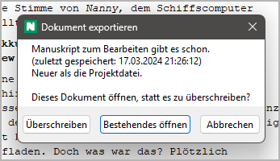

Am Manuskript schreiben
Writer als Texteditor aufrufen
Bemerkung
Das folgende Beispiel beschreibt den Arbeitsablauf für das Bearbeiten des Manuskripts mit LibreOffice. Dasselbe gilt auch für OpenOffice.
Andere Textverarbeitungsprogramme, die versprechen, das ODT-Dateiformat zu unterstützen, werden generell nicht empfohlen.
Sobald Ihr Romanprojekt mindestens einen Abschnitt hat, können
Sie mit dem Schreiben beginnen.
Dazu speichern Sie Ihr Projekt und exportieren Ihren Roman in die
Writer-Textverarbeitung. Das geht entweder mit
Exportieren > Manuskript zum Bearbeiten, oder indem Sie
in der Werkzeugleiste auf das Symbol  klicken.
klicken.
Hinweis
Wenn Sie den Menübefehl verwenden, können Sie novelibre ein Manuskript erzeugen und nach einer Nachfrage mit Writer öffnen lassen.
Wenn Sie auf das Symbol in der Werkzeugleiste klicken, wird Writer sofort nach dem Export aufgerufen.
Falls Sie das schon einmal gemacht haben, und es immer noch ein Manuskriptdokument von der letzten Sitzung gibt, werden Sie nun gefragt, ob Sie damit weiterarbeiten wollen. Falls ja, wählen Sie „Bestehendes öffnen“.
Falls Sie „Überschreiben“ wählen, erzeugt novelibre ein neues Manuskriptdokument. „Abbrechen“ bricht den Exportvorgang ab und bringt Sie zum Arbeitsbereich zurück.
Hinweis
novelibre prüft, ob ein existierendes Manuskript neuer oder älter als die Projektdatei ist, und schlägt eine Auswahl vor, indem es die passende Schaltfläche aktiviert. Sie können das mit der Eingabetaste akzeptieren. Wenn Ihre Auswahl dem Vorschlag entspricht, sehen Sie in der Statusleiste eine grüne Meldung. Andernfalls ist die Meldung gelb, nur zur Erinnerung.
Falls Sie den Export über den Menübefehl Exportieren eingeleitet haben, kann es sein, dass Sie entsprechend Ihren Exportoptionen gefragt werden, ob Sie das neu erzeugte Dokument öffnen wollen.
Wenn Sie mit „Ja“ antworten, wird Writer mit dem Manuskriptdokument gestartet. Andernfalls wird das Dokument einfach für den späteren Gebrauch aufbewahrt.
Abhängig von Ihren Exportoptionen kann novelibre jetzt das Projekt sperren, damit Sie es nicht versehentlich ändern, solange es in Writer in Bearbeitung ist.
Bemerkung
novelibre ruft Ihre Standardanwendung für Dateien mit der Endung .odt auf. Üblicherweise trägt sich LibreOffice oder OpenOffice bei der Installation selbst als Standardanwendung ein.
Nachdem Sie zu Writer gewechselt haben, sehen Sie Ihren ganzen Roman
als „Normseiten“ formatiert.
Der Navigator (mit F5 geöffnet) zeigt im Überschriften-Bereich
die Kapitel- und Abschnittstitel an. Per Doppelklick auf eine dieser
Überschriften springen Sie an den jeweiligen Ort.
Nun können Sie innerhalb der Textbegrenzungen, die die Abschnitte
definieren, losschreiben.
Das folgende Bild zeigt einen LibreOffice Writer Screenshot. Beachten Sie, dass die Textbegrenzungen hier angezeigt werden, was sehr zu empfehlen ist.
Bemerkung
Die Abschnittstitel, wie sie im Navigator zu sehen sind, sind im Arbeitsbereich unsichtbar, so dass sie nicht den Schreibfluss stören, und der Eindruck einer Original-Manuskriptseite gewahrt bleibt.
Änderungen zu novelibre zurückschreiben
Nach Beendigung der Schreibsitzung speichern Sie die Änderungen ab,
verlassen die Writer-Textverarbeitung, und kehren zu novelibre zurück.
Klicken Sie einfach in der Werkzeugleiste auf die Schaltfläche
 ,
und Ihre letzten Änderungen werden im Textbetrachter erscheinen.
,
und Ihre letzten Änderungen werden im Textbetrachter erscheinen.
Bemerkung
Das oben erwähnte Werkzeugleistensymbol gilt nur für das Manuskript. Wenn Sie Änderungen aus anderen Dokumenten übernehmen wollen, z.B. aus Figurenbeschreibungen, Zusammenfassungen oder dem Handlungsraster, benutzen Sie das Importieren-Menü.
Mit Writer neue Abschnitte anlegen
Wenn Sie während des Schreibens einen neuen Abschnitt brauchen,
müssen Sie deswegen nicht zu novelibre zurückkehren.
Beginnen Sie einfach eine neue Zeile mit der speziellen Markierung
###. Wahlweise können Sie einen Abschnittstitel anhängen,
und, durch | getrennt, auch eine Abschnittsbeschreibung.
Andere Metadaten sind dann bei Bedarf später in novelibre einzugeben.
Tipp
Sie können #### benutzen, um einen angehängten Abschnitt
zu erzeugen.
Das folgende Beispiel zeigt, wie Sie einen bestehenden Abschnitt aufteilen:
Beachten Sie die gekennzeichnete Abschnittsmarkierung im Bild.
In novelibre sehen Sie dann den neuen Abschnitt. Er hat einen Titel, doch keine anderen Metadaten.
Beachten Sie den ausgewählten Abschnitt im Bild.
Mit Writer neue Kapitel anlegen
Wenn Sie während des Schreibens ein neuens Kapitel brauchen, müssen Sie deswegen nicht zu novelibre zurückkehren. Weisen Sie einfach einer neuen Zeile innerhalb des laufenden Abschnitts das Format Überschrift 2 zu.
Wichtig
novelibre importiert nur Text innerhalb der Rahmen zurück, welche die Abschnitte definieren. Technisch teilt es immer Abschnitte auf, wenn es aus dem Manuskript neue Kapitel oder Abschnitte erzeugt.
Sie können mit Writer auch keine Kapitel verschieben. Falls Sie Kapitel oder Abschnitte umsortieren wollen, tun Sie es mit novelibre.
Das folgende Beispiel zeigt, wie man mit Writer ein Kapitel hinzufügt:
Es kommt nicht darauf an, wie ein neues Kapitel in Writer betitelt wird.
In novelibre sehen Sie dann sowohl ein neues Kapitel als auch einen neuen Abschnitt. Weil die Kapitel in diesem Beispiel automatisch nummeriert werden, passt die neue Kapitelüberschrift bereits, wohingegen der neue Abschnittstitel noch manuell angepasst werden sollte.